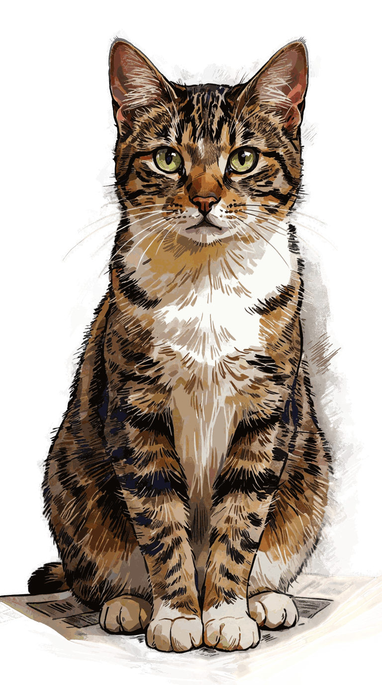
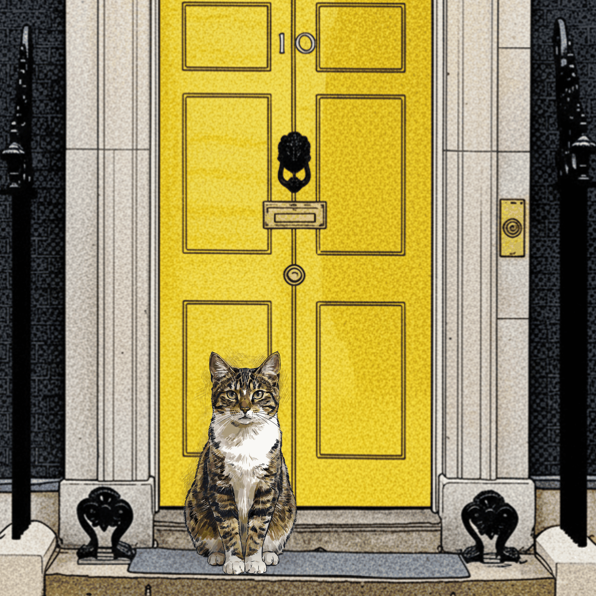

WEEK 1 · 60p★ FREE PRESS ★EST. 1896
PRESS PHOTO
The Reaction

The result
Grade: —
Method: FPTP
25% chose you 163 of 650 seats
YOU
EVERYONE ELSE
Copied!
Larry's Landlord
Congratulations,
Prime Minister.
Prime Minister.
You've had the security brief. You've met Larry the cat. The red boxes are already stacking up. Time to pick your battles and see how well you can run the country.

Larry — Chief Mouser to the
Prime Minister. Already judging you.
Prime Minister. Already judging you.
These four meters are the country. If any hit zero, you're out.
ON THE DESK · 1 OF 3
What's your first move?
Two cabinet members are pitching for your attention. Pick the fight you want to take on.
ON THE DESK · 2 OF 3
What's next?
Two more bids for your time. Choose the one you want to make your name on.
ON THE DESK · 3 OF 3
Last one.
One more priority, then the real work starts.
One more thing.
Larry winds around your ankles and looks up.
Larry will remember this.